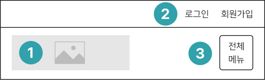
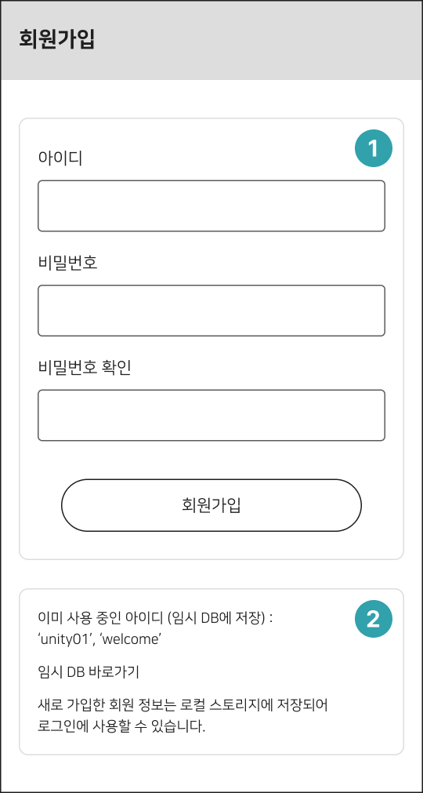

평촌도서관 웹사이트 리디자인 프로젝트입니다. 기존 웹사이트가 지닌 단점과 문제점을 파악하고 기획 및 디자인을 통하여 개선하였습니다. 개발 측면에서는 간단한 회원가입과 로그인 기능을 구현하였습니다. 더불어 공지사항 및 도서 소개 영역에 필요한 데이터를 임시 DB에서 불러온 후, 동적으로 화면 요소를 구성하였습니다.
문제점 및 해결 방안, 와이어프레임 및 기능 소개, 스타일 가이드, 최종 디자인 순으로 구성하였습니다.
프로젝트 범위
랜딩 페이지, 회원가입 및 로그인 페이지
역할
디자인 및 프론트엔드 개발 전담 (1인 프로젝트)
사용 언어 및 툴(tool)
웹 디자인 툴:
Figma, Photoshop, Illustrator
개발 툴:
Visual Studio Code, Github
사용 언어:
HTML, PHP(헤더 및 푸터 include 사용), CSS(SCSS), Javascript(Vanilla)
PROBLEMS & SOLUTION
기존의 웹사이트를 분석하여 개선이 필요한 문제점을 파악하고 해결 방안을 정리하였습니다.
2023년 8월 기준, 평촌도서관 홈페이지가 개편된 상태입니다. 다음 이미지는 개편 전 스크린 캡처입니다.
비반응형인 해당 웹사이트를 반응형 웹사이트로 재구축합니다.
중복되는 메뉴 및 바로가기를 정리하고 각 영역을 기능별로 뚜렷한 레이아웃로 구분합니다.
전반적인 색감과 아이콘 스타일에 통일감을 부여합니다.
도서 및 배너 이미지를 적절한 크기와 높은 해상도로 교체합니다.
WIREFRAME & FEATURES
리디자인한 와이어프레임의 구성 요소 및 기능을 소개합니다. 화면 상단에서 하단으로 순차적으로 구성하였습니다.
현재 사용 중인 기기 또는 브라우저의 가로 폭(px 기준)에 반응하여 와이어프레임이 소개됩니다. (모바일/태블릿/데스크톱)

헤더
평촌도서관의 로고 이미지입니다.
로그인 및 회원가입 메뉴입니다. 로그인이 성공하면 사용자 이름과 함께 간단한 인사말이 나타납니다. 사용자 이름은 로컬 스토리지에 저장되며, 로그아웃 전에는 새로고침을 하여도 저장된 이름으로 표시됩니다.
메뉴 내비게이션을 여닫는 햄버거 메뉴입니다.
1차 메뉴 모음으로 구성된 메뉴 바(bar) 영역입니다. 1차 메뉴 위로 커서를 옮기면 2차 메뉴 내비게이션이 등장합니다.
검색 및 메인 배너
도서 검색 영역입니다. 드롭박스 UI에서 검색 옵션을 선택할 수 있고 검색창에 검색어를 입력할 수 있습니다.
메인 배너 영역입니다. 기존의 정적인 배너를 페이드 인/아웃 슬라이더(fade in/out slider)로 교체하였으며 각 슬라이드는 전면 이미지로 제작하였습니다.
온라인 서비스
좌우 버튼을 사용하여 서비스들을 편리하게 둘러볼 수 있도록 슬라이더로 구현하였습니다. 기기 및 브라우저의 가로 폭에 반응하여 보여지는 항목 개수가 조절됩니다. 더불어 기존 이미지를 새로운 아이콘으로 교체하여 통일감과 주목도를 높였습니다.
공지사항
fetch API를 활용하여 임시 DB에서 HTTP 통신으로 데이터를 불러오고 최신순으로 정렬 및 원하는 개수만큼 추출합니다. 추출된 데이터를 바탕으로 게시글 목록이 동적으로 작성되도록 구현하였습니다. 정적인 HTML 마크업과 달리, DB가 변경되면 목록이 자동으로 업데이트되는 장점이 있습니다.
퀵 메뉴
우측 하단부에 작게 자리한 기존의 퀵 메뉴 모음을 본문 영역으로 들여오고 크기를 키워 접근성을 높였습니다.
도서 소개
분산된 도서 소개 영역들을 탭 형식으로 통합하여 사용자가 원하는 카테고리를 선택할 수 있게 하였습니다. 공지사항과 마찬가지로, 임시 DB에서 HTTP 통신으로 불러온 데이터를 카테고리에 해당하는 기준(대출 횟수, 추천 수, 등록 일자)으로 내림차순 정렬합니다. 필요한 수만큼 추출한 도서 정보를 바탕으로 각 탭의 구성 요소를 구현합니다.
배너 모음 및 관련 사이트
국가 공공도서관 배너 모음과 관련 사이트 목록을 보여주는 드롭박스 UI가 위치합니다.
푸터
각종 방침 및 기관 정보를 포함합니다.
메뉴 내비게이션
햄버거 메뉴는 선택 시 내부 텍스트가 변경되며 내비게이션 보이기/숨기기 기능을 제공합니다. 내비게이션은 헤더 바로 아래에 위치합니다. 1차 메뉴를 선택하면 2차 메뉴가 등장하는 아코디언 형식으로 구성하였습니다.
1차 메뉴 위로 커서를 옮기면 2차(하위) 메뉴 모음이 하단에 등장합니다. 사용자가 현재 보고 있는 1차 메뉴를 쉽게 파악하도록 텍스트 및 아이콘을 사용하여 정보를 분명하게 제공합니다.

회원가입 페이지
간략한 회원가입 양식입니다. 정규표현식을 사용하여 입력값의 조건을 설정합니다. 임시 DB와 로컬 스토리지를 모두 대조하여 아이디 중복 여부를 확인합니다. 회원가입에 성공하면 안내 문구와 함께 로그인 페이지로 이동합니다.
이미 사용 중인 회원 정보(임시 DB에 저장 중이며 로그인 페이지에서 확인 가능)를 사용하여 로그인 할 수 있습니다. 새로 가입한 회원 정보는 로컬 스토리지에 저장되어 로그인에 사용할 수 있습니다.
STYLE GUIDE
COLOR
공공기관에 적합한 차분하고 신뢰를 의미하는 청색을 메인 컬러로 선택하였습니다. 서브 컬러는 유사색으로 배색하여 안정감과 조화를 지향하였습니다.
main color
#43B5BE
sub color1
#3D5BCB
sub color2
#072559
FONT
가독성이 좋은 고딕 계열 폰트 중에서 비교적 보편적으로 사용되는 ‘나눔스퀘어’ 폰트를 선택하였습니다.